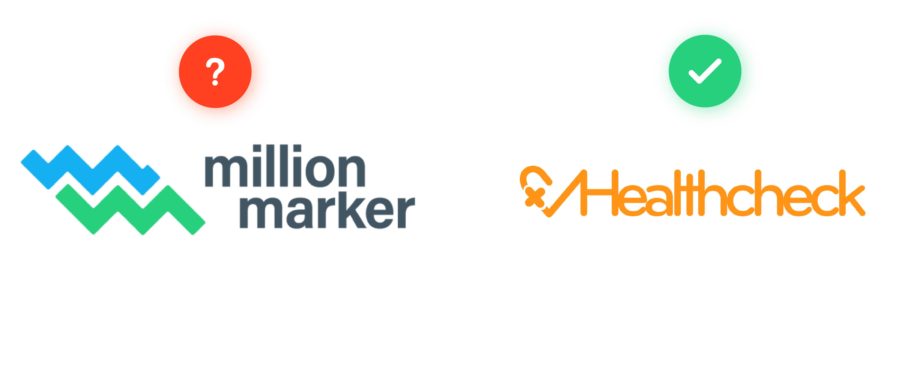
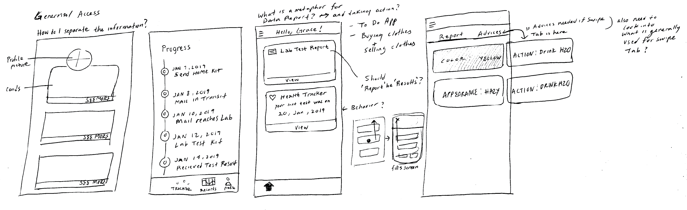
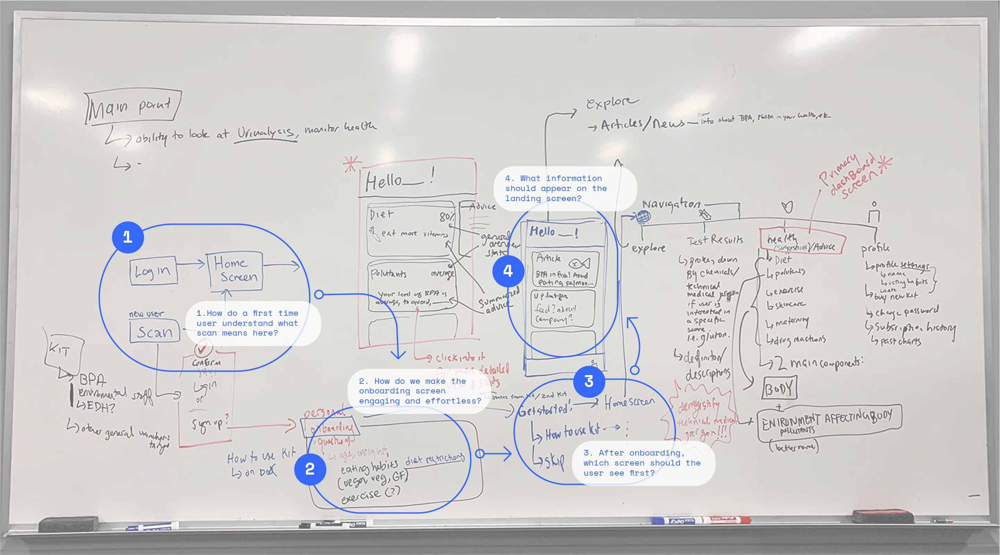

We were asked to design a speculative interface based on a recent startup and their mission while disregarding any interfaces they have made so far.
We chose the startup Million Marker and their mission is to let people measure their exposure to environmental chemicals like BPA and phthalates through a mail-in urine test. We decided to rename the startup and design an app.

Here's what we discovered
We talked to people and did some research, here's are some insights we learned:
Our app needs to demystify medical jargon.
Some users may see the app as a replacement for doctor’s checkups.
The medical laboratory may face a decrease in patients and lab testing.
Quick! to the drawing board
All four of us brought our sketches together and mapped it on the board.


Let's rearrange this
We brought out drawing board sketches into Figma where together we created the lo-fi design of the app.
It got to be the real deal
We translated our lo-fi to hi-fi designs after figuring out the general navigation flow. We did an external design critque on our prototype and this is what we learned:
Health & Result page could be merged into one to make the information more transparent.
Kit-buying section needs more emphasis as that is the main feature of the app
Chemical names and results could be given more emphasis.
There is too much text, introducing more visuals or graphs could improve a clean and readable look
Back to ideating
We took the insights we just gained and went back to tweaking our hi-fi designs so we can do our next round of user testing. We were under time constraints and had to submit our prototype within 3 days after our external design critique to Usertesting.com to arrange for enough time to receive feedback from our anonymous participates.
User testing results
We took the prototype and did usertesting through the UserTesting.com where we ask participants to perform specific tasks.
Reflection
Overall, we believe that our app works pretty well. Users had some difficulty understanding what was supposed to happen in the beginning, but once they got into the app, they seemed to feel it was more intuitive and easy to use.
The User Testing gave us a deeper insight into how the app would work with a brand new user. Even though we considered different affordances to make the process easier, it worked because we all knew what the kit was about. However, we realized that some information before signing up or ordering a new kit would be helpful for people who are not necessarily informed about the kit already.